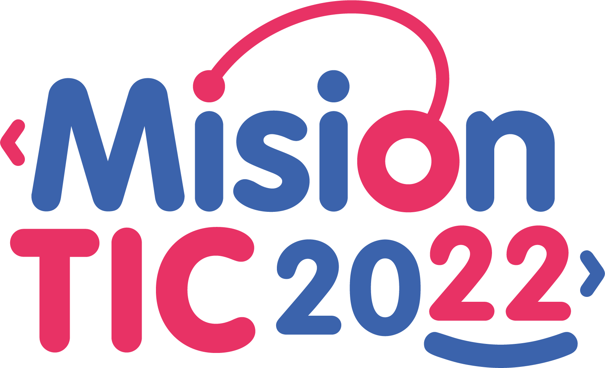

<!DOCTYPE html>
<html lang="en">
<head>
    <meta charset="UTF-8">
    <meta http-equiv="X-UA-Compatible" content="IE=edge">
    <meta name="viewport" content="width=device-width, initial-scale=1.0">
    <!--Scripts-->
    <script src="https://kit.fontawesome.com/b4eff97c4b.js" crossorigin="anonymous"></script>
    <!--Styles-->
    <link rel="stylesheet" href="styles/footer.css">
    <title>Footer</title>
</head>
<body>
    <footer>
        <div class="container_footer">
            <div class="box_footer">
                <div class="logo">
                    
                </div>
                <div class="presentation">
                    <p>Web development project for MisionTIC2022, Universidad de Antioquia. This project is a
                        software application that allows you to track the sales of a product and/or service 
                        in a company and make the corresponding follow-up.
                    </p>
                </div>
            </div>
            <div class="box_footer">
                <h2>Members</h2>
                <a href="https://github.com/AndreaAmaya19" target="_blank">@AndreaAmaya19</a>
                <a href="https://github.com/gharias" target="_blank">@gharias</a>
                <a href="https://github.com/yepedraza" target="_blank">@yepedraza</a>
                <a href="https://github.com/charliesan16" target="_blank">@charliesan16</a>
                <a href="https://github.com/teriesu" target="_blank">@teriesu</a>
            </div>
            <div class="box_footer">
                <h2>Proyect media</h2>
                <a href="https://github.com/yepedraza/SoftwareDevelopment-G7" target="_blank"><i class="fab fa-github"></i>GitHub</a>
                <a href="https://trello.com/b/ozitnBEm" target="_blank"><i class="fab fa-trello"></i>Trello</a>
            </div>

        </div>
    </footer>
</body>
</html>